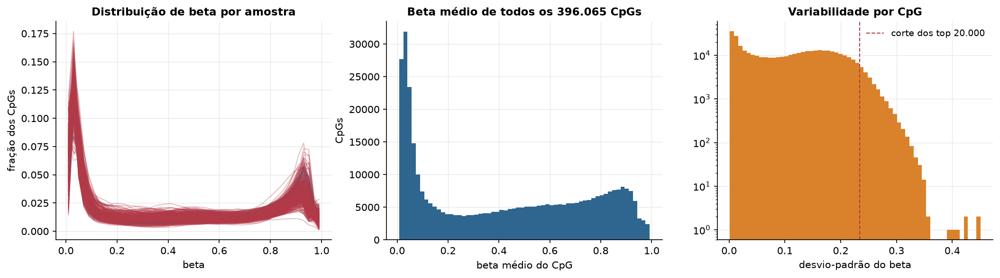
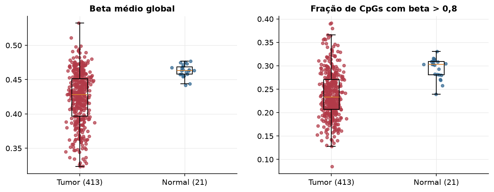
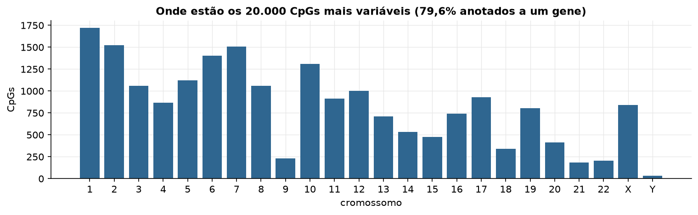
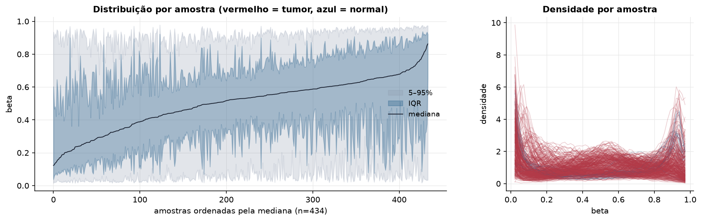
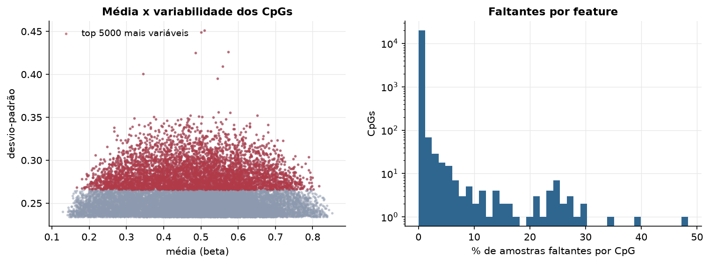
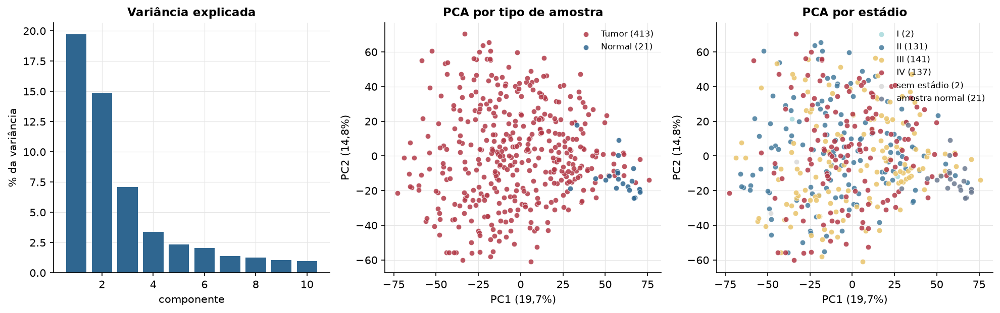
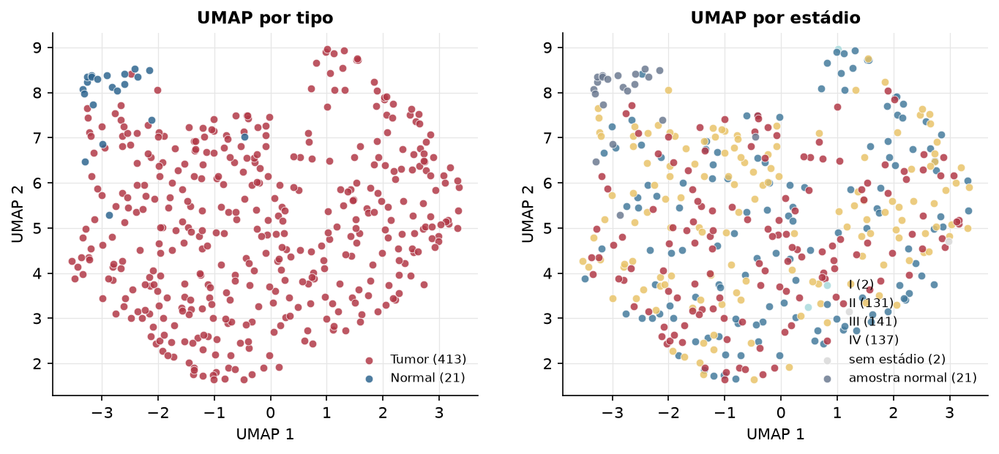
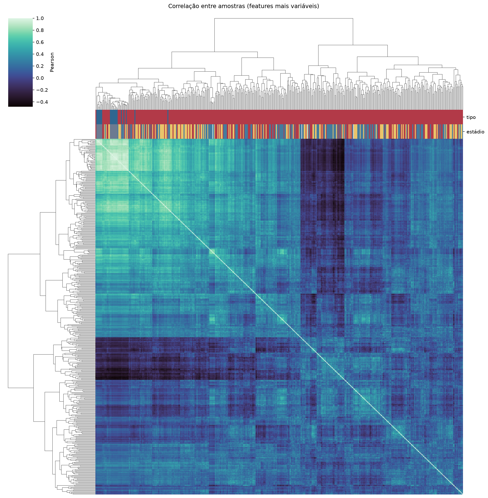
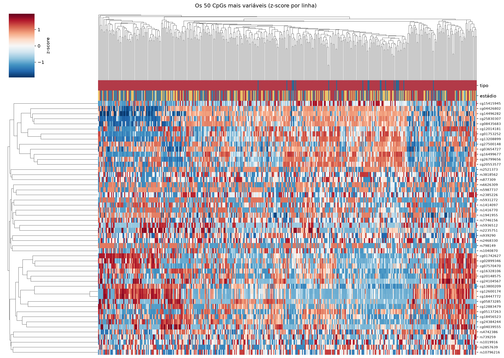
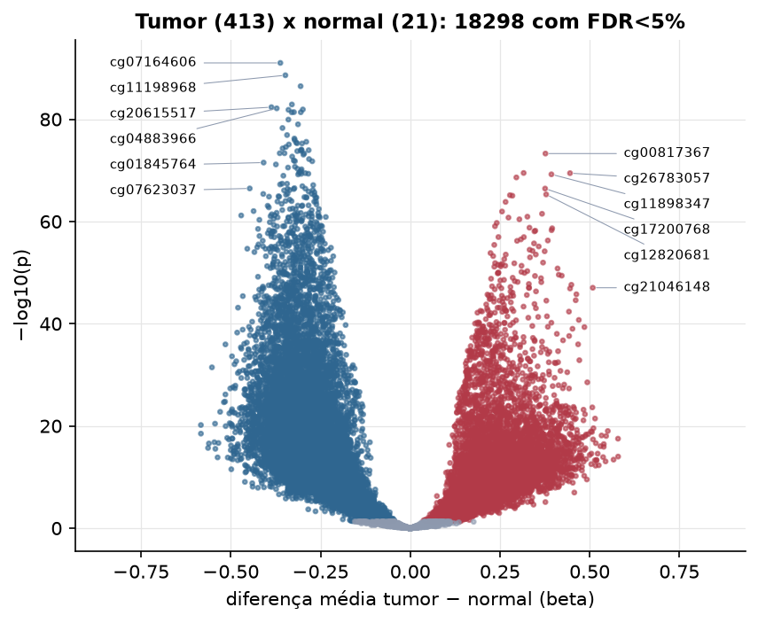

BLCA · Metilação do DNA (450k)
Illumina Infinium HumanMethylation450, valores beta (0 a 1) · gerado em 21/10/2026 18:44
396.065CpGs medidos
382.032CpGs sem faltante
20.000CpGs
413amostras tumorais
21amostras normais
0,1%valores faltantes
Fonte: PanCanAtlas HM450 via API do Xena
O array tem ~485 mil CpGs. Para não ocupar espaço, guardamos estatísticas de todos os CpGs e só os 20.000 mais variáveis para PCA, UMAP e heatmaps.
Principais resultados
- A distribuição de beta é bimodal: a maioria dos CpGs está quase toda desmetilada (perto de 0, típico de ilhas CpG em promotores) ou quase toda metilada (perto de 1, corpo gênico e regiões intergênicas). 45,4% dos CpGs têm beta médio intermediário (0,2 a 0,8).
- Beta médio global: 0,428 nos tumores e 0,463 nos normais (hipometilação global no tumor, como é comum em câncer).
- 20.000 CpGs medidos em 434 amostras (413 tumorais e 21 normais); 0,1% dos valores estão faltando.
- Os dois primeiros componentes principais explicam 19,7% e 14,8% da variância das features mais variáveis.
- Correlação mediana entre amostras: 0,19.
- Tumor x normal: 18298 CpGs diferentes com FDR < 5% (7577 maiores no tumor, 10721 maiores no normal; 21 pacientes têm o par tumor-normal).
- Mais aumentados no tumor: cg00817367, cg22235821, cg26783057, cg11898347, cg11561737, cg17200768, cg12820681, cg18240143.
- Mais reduzidos no tumor: cg07164606, cg11198968, cg18966152, cg11430766, cg20615517, cg04883966, cg02223135, cg03701623.
- Associações clínicas com p < 0,05 nos componentes principais: PC2 com estádio (p=0.027); PC3 com estádio (p=0.00018); PC3 com idade (p=0.00036).
Distribuição global



Exploração dos CpGs mais variáveis
Distribuição dos valores


Estrutura das amostras




Tumor x normal

Features mais diferentes entre tumor e normal
| diferenca_tumor_menos_normal | t | p | fdr | |
|---|---|---|---|---|
| cg07164606 | -0.362 | -28 | 9.51e-92 | 1.9e-87 |
| cg11198968 | -0.348 | -27.368 | 2.46e-89 | 2.46e-85 |
| cg18966152 | -0.306 | -25.368 | 3.42e-87 | 2.28e-83 |
| cg11430766 | -0.33 | -25.288 | 1.28e-83 | 6.4e-80 |
| cg20615517 | -0.387 | -28.719 | 4.31e-83 | 1.72e-79 |
| cg04883966 | -0.372 | -27.988 | 7.36e-83 | 2.45e-79 |
| cg02223135 | -0.299 | -24.805 | 1.22e-82 | 3.48e-79 |
| cg03701623 | -0.339 | -25.181 | 1.43e-82 | 3.58e-79 |
| cg26821543 | -0.324 | -24.79 | 4.04e-82 | 8.09e-79 |
| cg13989810 | -0.305 | -24.423 | 4.27e-82 | 8.09e-79 |
| cg09256281 | -0.33 | -26.229 | 4.45e-82 | 8.09e-79 |
| cg06257038 | -0.34 | -26.128 | 1.16e-80 | 1.93e-77 |
| cg22677048 | -0.313 | -24.179 | 9.87e-80 | 1.52e-76 |
| cg24100610 | -0.356 | -26.507 | 5.11e-79 | 7.29e-76 |
| cg01460124 | -0.343 | -23.741 | 1.23e-77 | 1.64e-74 |
| cg03153765 | -0.323 | -24.898 | 5.86e-77 | 7.32e-74 |
| cg20378520 | -0.322 | -24.617 | 1.12e-76 | 1.32e-73 |
| cg11823318 | -0.29 | -23.447 | 2.58e-76 | 2.87e-73 |
| cg05554320 | -0.318 | -24.711 | 3.51e-76 | 3.7e-73 |
| cg06338708 | -0.315 | -23.722 | 5.04e-76 | 5.04e-73 |
| cg06412555 | -0.302 | -24.173 | 5.41e-76 | 5.15e-73 |
| cg24338745 | -0.338 | -25.457 | 8.48e-76 | 7.71e-73 |
| cg01935731 | -0.347 | -26.507 | 2.67e-75 | 2.32e-72 |
| cg19082304 | -0.356 | -26.273 | 5.01e-75 | 4.18e-72 |
| cg09186689 | -0.303 | -23.786 | 8.22e-75 | 6.58e-72 |
| cg11340951 | -0.303 | -24.206 | 1.09e-74 | 8.31e-72 |
| cg17837712 | -0.283 | -23.027 | 1.12e-74 | 8.31e-72 |
| cg07882687 | -0.305 | -23.585 | 1.46e-74 | 1.04e-71 |
| cg16398965 | -0.315 | -24.985 | 1.7e-74 | 1.18e-71 |
| cg01164334 | -0.35 | -26.499 | 4.44e-74 | 2.87e-71 |
Associação com variáveis clínicas
p-valores da associação dos três primeiros componentes principais (só tumores) com estádio (Kruskal-Wallis), sexo (Mann-Whitney), idade (Spearman) e sobrevida global (Cox univariado).
| estádio (Kruskal) | sexo (Mann-Whitney) | idade (Spearman) | sobrevida OS (Cox) | |
|---|---|---|---|---|
| PC1 (17,6%) | 0.055 | 0.123 | 0.899 | 0.166 |
| PC2 (15,1%) | 0.027 | 0.343 | 0.616 | 0.677 |
| PC3 (7,2%) | 0.000177 | 0.119 | 0.000356 | 0.175 |